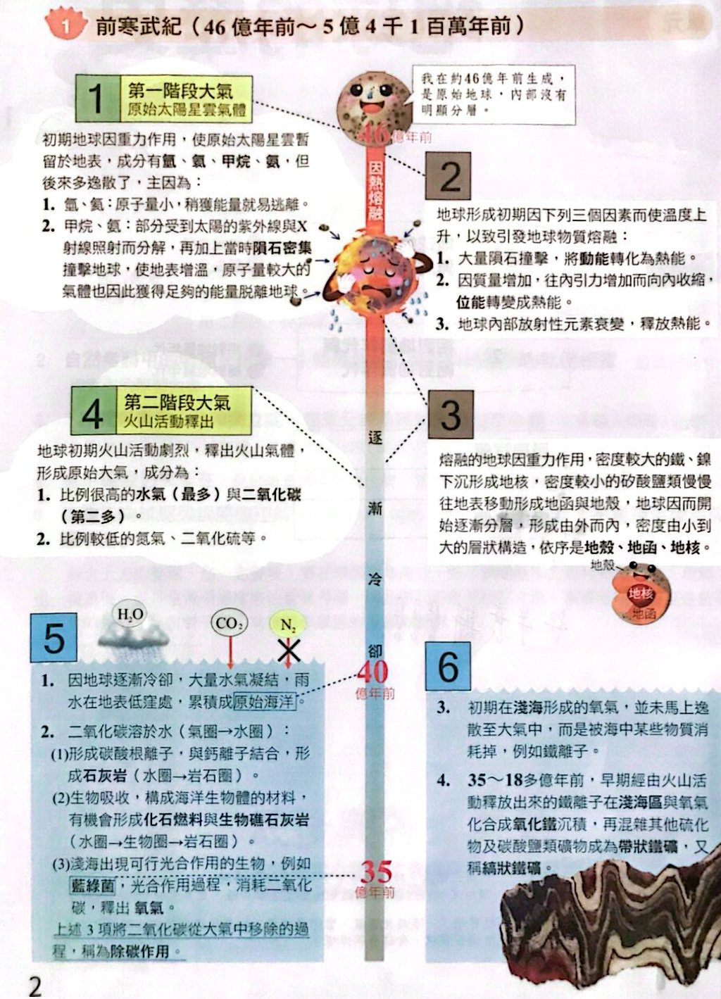
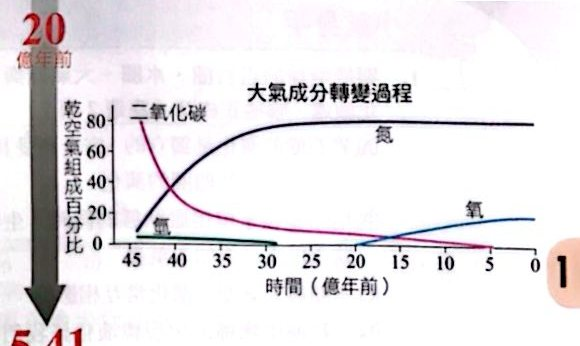
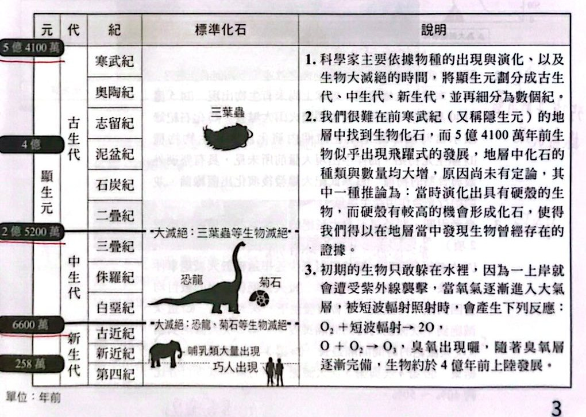

前寒武紀（46 億年前～5 億 4 千 1 百萬年前）
地球形成至寒武紀開始，這段時間占了地球歷史的 88％。重點是大氣怎麼從原始的氣體，一步一步變成今天的氮氣＋氧氣，同時海洋、岩石圈、生物圈互相影響。先看整張時間軸，再看下面的文字整理。

前寒武紀時間軸：第一～第三階段大氣、地球分層、海洋形成（講義 p.2）
大氣的三個階段
第一階段大氣：原始太陽星雲氣體
- 初期地球因重力暫留的原始氣體：氫、氦、甲烷、氨，但後來多數逸散，原因有二：
1. 氫、氦：原子量小，稍獲能量就逃離。
2. 甲烷、氨：部分受太陽紫外線與 X 射線照射而分解；再加上當時隕石密集撞擊，地表增溫，原子量較大的氣體也獲得足夠能量脫離地球。
第二階段大氣：火山活動釋出
- 地球初期火山活動劇烈，釋出火山氣體，形成原始大氣。
- 成分：比例很高的水氣（最多）與二氧化碳（第二多）；比例較低的氮氣、二氧化硫等。
第三階段大氣：海氣交互作用與生物作用下逐漸形成
1. 地球冷卻 ⇒ 大量水氣凝結成雨，累積成原始海洋。
2. 二氧化碳溶於水（氣圈→水圈）：形成碳酸根離子，與鈣離子結合成石灰岩（水圈→岩石圈）；被生物吸收構成生物體材料，有機會形成化石燃料與生物礁石灰岩（水圈→生物圈→岩石圈）；淺海的光合作用生物（藍綠菌）消耗 CO₂、釋出氧氣。上述把二氧化碳從大氣移除的過程稱為除碳作用。
3. 初期淺海形成的氧氣並未馬上逸散到大氣，而是被海水中的 Fe²⁺ 等消耗掉。
4. 35～18 多億年前，火山釋出的 Fe²⁺ 在淺海與氧氣化合成氧化鐵沉積，混雜硫化物、碳酸鹽類礦物成為帶狀鐵礦。
5. 海中鐵離子含量降低後，氧氣得以釋放到大氣，約 20 億年前大氣氧比例開始顯著上升。
6. 氮氣化性不活潑、難溶於水，所以當水氣與二氧化碳比例減少時，氮氣比例就逐漸提高，成為今日大氣最主要的成分（是比例顯著增加，總量並沒有增加很多）。

大氣成分轉變過程（乾空氣組成百分比，講義 p.3）
顯生元（5 億 4100 萬年前～現今）

顯生元地質年代表（元、代、紀、標準化石；單位：年前，講義 p.3）
- 科學家主要依據物種的出現與演化，以及生物大滅絕的時間，把顯生元劃分成古生代、中生代、新生代，再細分為數個紀。
- 很難在前寒武紀（又稱隱生元）的地層中找到生物化石；5 億 4100 萬年前生物似乎出現飛躍式的發展（寒武紀大爆發），地層中化石的種類與數量均大增。原因尚無定論，其中一種推論是：當時演化出具有硬殼的生物，硬殼較容易形成化石，使我們得以在地層中發現生物曾經存在的證據。
- 初期的生物只敢躲在水裡，因為一上岸就會遭受紫外線襲擊。當氧氣逐漸進入大氣層，被短波輻射照射時產生：O₂＋短波輻射→2O；O＋O₂→O₃（臭氧）。隨著臭氧層逐漸完備，生物約於 4 億年前上陸發展。
小試身手
看答案與詳解收起
答(C)(D)
解這題在考什麼：地球系統的四個子系統（岩石圈、水圈、大氣圈、生物圈）互相影響；地質年代怎麼劃分。
- (A) ✗ 各圈的演化會互相影響，不是獨立的（例如除碳作用同時牽涉氣圈、水圈、岩石圈、生物圈）。
- (B) ✗ 熔融狀態的地球不可能有生物；三葉蟲約 5.4 億年前才出現。
- (C) ○ 水圈與大氣圈常互相影響：水氣凝結降雨成海洋、CO₂ 溶入海水等。
- (D) ○ 生物的出現、演化與大滅絕，是劃分地質年代（代、紀）的重要依據。
- (E) ✗ 藍綠菌的光合作用產生氧氣，才有後來的臭氧層；順序顛倒。
看答案與詳解收起
答(D)
解這題在考什麼：寒武紀大爆發的內容（地點是海洋、特徵是硬殼骨骼）。
- (A) ✗ 大爆發之前已有生物（藍綠菌等單細胞生物，約 35 億年前就出現）。
- (B) ✗ 大爆發是生物種類突然大增，不是火山爆發。
- (C) ✗ 大量新物種出現在海洋中，不是陸地（生物約 4 億年前才上陸）。
- (D) ○ 顯生元初期，海洋中出現大量前所未見、具堅硬外殼與骨骼的物種（容易形成化石）。
- (E) ✗ 藍綠菌早在約 35 億年前就已出現並行光合作用，不是大爆發之後才演化出來。
看答案與詳解收起
答(D)(E)
解這題在考什麼：看圖：大滅絕＝很短時間內屬的數目急遽減少，回升則很慢；五次的時間點是 444、359、252、201、66（百萬年前）。
- (A) ✗ 大滅絕是短時間內急遽減少，之後屬的數目緩慢回升，所以減少的速率遠高於回升的速率。
- (B) ✗ 大滅絕後屬的數目並不一定回到原本的量就再發生下一次（例如第 3 次之後屬數遠低於之前）。
- (C) ✗ 間隔：444→359＝85、359→252＝107、252→201＝51、201→66＝135（最長），最長的是第 4 次到第 5 次，不是第 2 次到第 3 次。
- (D) ○ 第 3 次（252 百萬年前，二疊紀末）＝古生代結束，也就是三葉蟲滅絕的那一次（圖下註記）。
- (E) ○ 第 4 次約從 700 降到 400（約 43％）、第 5 次約從 2150 降到 1150（約 46％），都約 40％～50％。
看答案與詳解收起
答(B)(C)
解這題在考什麼：大氣成分曲線：水氣、CO₂ 比例下降；氮氣比例上升；氧氣約 20 億年前才明顯增加。
- (A) ○ 地表降溫，水氣凝結降雨，在低窪處形成海洋。
- (B) ✗ 氮氣比例變高不是火山噴出大量氮氣，而是水氣凝結成液態水、CO₂ 溶入水中，其他氣體的比例大減，所以氮氣的比例升高（總量並沒有大增）。
- (C) ✗ 能行光合作用的生物（藍綠菌）約 35 億年前就出現；但氧氣一開始並未進入大氣，而是被海水中的亞鐵離子等消耗掉，約 20 億年前才使大氣氧比例明顯增加。
- (D) ○ CO₂ 比氮氣容易溶於水，液態水形成後 CO₂ 比例快速下降。
- (E) ○ 光合作用也會消耗 CO₂，是 CO₂ 下降的原因之一。
看答案與詳解收起
答(C)
解這題在考什麼：冥古元（約 46～40 億年前）＝地殼尚未完全固化，仍有頻繁的隕石撞擊與熔融，地表高溫、沒有穩定的海洋與生物。
- (C) ✓ 圖為暗色球體邊緣發光、有撞擊閃光的景象，符合冥古元的熔融＋撞擊。
- (A) 有火山，但同時有大片海洋與藍綠色海面，較接近太古元（已有海洋）。
- (B) 有恐龍的森林：中生代。
- (D) 白色冰封的星球：元古元的雪球地球（全球冰封）。
- (E) 灰雲與乾燥的地面，沒有冥古元特徵。
判斷依據：冥古元＝地球形成初期，高溫熔融、頻繁撞擊，地殼尚未完全固化。
看答案與詳解收起
答(E)
解這題在考什麼：兩者都和藍綠菌的光合作用有關，且形成在淺海；而且都是早期地球的特殊環境才能大量形成。
- (A) ○ 疊層石的紋層、帶狀鐵礦的層狀構造，都與光合作用（受光照、晝夜與季節變化影響）強弱有關。
- (B) ○ 兩者都形成在淺海（要有陽光才能行光合作用）。
- (C) ○ 疊層石的層狀結構與藍綠菌的活動有關（藍綠菌＋泥砂層層堆疊）。
- (D) ○ 帶狀鐵礦存在，顯示當時海水中已有足夠氧氣與 Fe²⁺ 化合成氧化鐵沉積。
- (E) ✗ 今日海水中 Fe²⁺ 已很少、大氣氧氣豐富，帶狀鐵礦不再大量形成；疊層石也只在少數特殊環境存在。